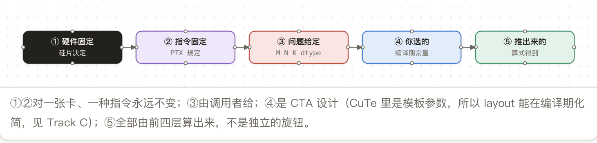
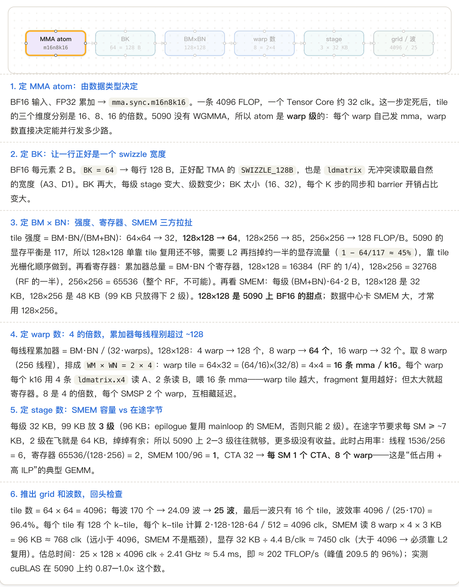

怎样定 CTA / tile / warp 的数量：以 RTX 5090 为例
一个 GEMM 里有一堆“数量”：CTA tile 多大、有几个 tile、grid 开几个 CTA、每个 CTA 几个warp、几级 stage。它们不是同一层的东西：有的是硅片焊死的，有的是指令规定的，有的是你选的，剩下的都是推出来的。这一页以 RTX 5090 为例，把这些参数分层，给出从头定一个配置的顺序和每一步的算式，并用 8192³ BF16 GEMM 完整算一遍。
B 指 thread block（线程块，也就是 CTA）。BM = 一个 CTA 负责的输出块在 M 方向有多大，BN、BK 同理。这个写法来自 CUDA 的 block 术语：CuTe 教程写作 bM / bN / bK （注释里是 BLK_M, BLK_N, BLK_K ），CUTLASS 2.x 是 ThreadblockShape::kM ，3.x 是 TileShape ，Triton 是 BLOCK_SIZE_M 。同一套命名往下延伸：CTA 层 BM × BN × BK（如 128 × 128 × 64），warp 层 WM × WN（如 64 × 32），指令层 m × n × k（如 m16n8k16 ）。读代码时记住：大写 B 前缀是“块的大小”，单独的 A、B、C 才是矩阵。
Tiling 从输出出发，输入是倒推出来的
GEMM 的 tiling 是先切输出 C，每个 CTA 负责一块输出并且一直负责到底（output-stationary）；它要搬哪些输入，是从这块输出倒推出来的。
为什么从输出切
- 每个输出元素只归一个 CTA：累加器一直留在这个 CTA 的寄存器里，K 全部算完再写回一次。CTA 之间没有写冲突，也不需要归约。
- K 是归约维：沿 K 切给不同 CTA，几个 CTA 就会算同一个输出的不同部分和，最后还得合并。所以默认 K 不在 CTA 之间分，而是在每个 CTA 内按 BK 一轮一轮循环——M、N 在空间上切，K 在时间上切。
倒推的顺序
① 切输出：C[M,N] → BM×BN 的 tile，tile 数 = ceil(M/BM)·ceil(N/BN) = CTA 数
② 这块输出需要哪些输入：A 的 BM 行（BM×K），B 的 BN 列（BN×K）
③ K 方向按 BK 循环：每轮搬 A[BM×BK] + B[BN×BK] 进 SMEM
④ CTA 内部继续切输出：CTA tile → warp tile → MMA atom（16×8）→ 每线程的累加器
每一层都是先切输出，再推出这一层要用哪些输入。CuTe 的写法也是这样：同一个 cta_tiler = (BM, BN, BK) 和 cta_coord = (bm, bn, _) ，用 Step 投影出三块（sgemm_sm80.cu ）：
Tensor gA = local_tile(mA, cta_tiler, cta_coord, Step<_1, X,_1>{}); // A 只取 M、K → (BM,
Tensor gB = local_tile(mB, cta_tiler, cta_coord, Step< X,_1,_1>{}); // B 只取 N、K → (BN,
Tensor gC = local_tile(mC, cta_tiler, cta_coord, Step<_1,_1, X>{}); // C 只取 M、N → (BM,
切法由输出定，tile 多大要把输入代价也算进来
| 约束 | 从哪里反推 | 对输出 tile 的要求 |
|---|---|---|
| 复用 | 每走一步 K 搬 (BM+BN)·BK 个输入，做 BM·BN·BK 次乘加 → 强度 ≈ BM·BN/(BM+BN) FLOP/B | 越大越好 |
| SMEM | 每级 stage 放 (BM+BN)·BK·2 B 的输入，5090 每 CTA ≤ 99 KB | 不能太大 |
| 寄存器 | 累加器共 BM·BN 个，分给 CTA 的所有线程 | 不能太大 |
| SM 利用率 | tile 数 = CTA 数，要和 170 个 SM 对得上 | 不能太大（小问题尤其明显，见端到端例子：1024×256 按 128×128 只有 16 个 tile） |
什么时候不只切输出：输出 tile 太少、K 又长时，用 split-K 或 Stream-K 把 K 也分给多个 CTA，代价是多一步部分和归约——这时就不再是纯粹的 output-stationary。
先分清四种“数量”
讨论“CTA 数量”时，常常把四个不同的数混在一起：
| 名字 | 含义 | 由谁决定 | 8192³ · 128×128 tile 的例子 |
|---|---|---|---|
| tile 数 | 输出 C 被切成多少块（逻辑工作量） | ceil(M/BM) · ceil(N/BN) （split-K 再乘 S） |
64 × 64 = 4096 |
| grid 大小 | launch 了多少个 CTA | 普通 kernel = tile 数；persistent kernel = SM 数 × 每 SM 驻留数 | 4096（或 persistent：170） |
| 每 SM 驻留 CTA 数 | 一个 SM 同时能放几个 CTA（占用率） | 线程、寄存器、SMEM、CTA 数四个上限的最小值 | 1（SMEM 限制） |
| 波数（wave） | 全部 tile 要分几批跑完 | tile 数 ÷ (170 × 驻留数)，向上取整 | 24.09 → 25 波 |
你一般不直接“选 CTA 数”：选的是 tile 形状，tile 数和 grid 是推出来的。只有 persistent kernel 才让 grid 大小和 tile 数脱钩（每个 CTA 循环取多个 tile）。
参数分五层：哪些不变，为什么

① 硬件固定：一张 5090 永远不变
| 参数 | 5090 的值 | 为什么不变 | 它约束什么 |
|---|---|---|---|
| warp 宽度 | 32 lanes | 每个 SMSP 物理上就是 32 条 lane 一起执行一条指令 | 线程数按 32 取整；所有 TV layout 的 T 维 |
| SM 数 | 170 | 芯片上启用了 170 个 SM | 一波能放多少 CTA → 波数 |
| 每 SM 的 SMSP | 4 | 每个 SM 有 4 套调度器 + Tensor Core | 每 CTA warp 数取 4 的倍数，否则有 Tensor Core 闲着 |
| 寄存器 | 65536 × 32 bit / SM，≤255 / 线程 | 寄存器堆的物理大小；指令编码里寄存器号只有 8 位 | 累加器大小 → tile 上限 |
| SMEM | ≤100 KB / SM，≤99 KB/ CTA | L1 和 SMEM 共用 128 KB SRAM | stage 数 × 每级字节 |
| 线程上限 | 1024 / CTA，1536 /SM，32 CTA / SM | 调度器的硬件槽位 | 占用率 |
| bank | 32 个 × 4 B | SMEM 的物理分组 | swizzle、wavefront |
| sector / 向量宽度 | 32 B sector，单线程最多 16 B | L2 / LSU 的访问粒度 | copy 的线程布局和向量宽度 |
| 带宽 / 算力 | 1792 GB/s，BF16 512 FLOP/clk/SM | 显存位宽 × 频率；Tensor Core 数量 | 机器平衡 117 FLOP/B |
② 指令固定：选了一种 MMA / copy 指令就不变
| 参数 | 值 | 为什么不变 |
|---|---|---|
| MMA atom 形状 | BF16/FP16：m16n8k16 ；FP8：m16n8k32 ；FP4 block-scaled：m16n8k64 |
PTX 指令定义的形状，硬件只认这些 |
| atom 的 TV layout | 每线程 A 4 × b32、B 2 × b32、C 4 × f32（m16n8k16 ） |
PTX 规定了哪个 lane 的哪个寄存器放哪个元素（A4） |
ldmatrix 形状 |
8×8 b16 矩阵，x1 / x2 / x4 | 同上 |
| TMA box | 每维 ≤256 元素，内层 16 B 的倍数；swizzle 32 /64 / 128 B | TMA 描述符的格式（D1） |
这两层的后果是：tile 的每一维必须是 atom 形状的整数倍（BM 是 16 的倍数、BN 是 8 的倍数、BK 是 16 的倍数），而且 BK 最好让一行正好是一个 swizzle 宽度：BF16 时 BK · 2 B = 128 B → BK = 64 。
③ 问题给定：M、N、K、数据类型、存储顺序
调用者决定。它们通常是运行期的值（同一个 kernel 要服务各种形状），所以 CuTe 里 GMEM 的 layout 是动态的，而 tile 内部的 layout 是静态的。
④ 你选的（CTA 设计，编译期常量）
只有这几个是真正的旋钮：BM × BN × BK 、warp 排列 WM × WN （决定 warp 数）、stage 数、schedule（cooperative /ping-pong）、swizzle 模式、是否 persistent / split-K / Stream-K。
⑤ 推出来的：全部有算式
tile 数 = ceil(M / BM) · ceil(N / BN) (· S，split-K)
线程数 / CTA = 32 · warps = 32 · WM · WN
warp tile = (BM / WM) × (BN / WN)
累加器寄存器 = BM · BN / threads （FP32，每元素 1 个寄存器）
每线程寄存器 ≈ 累加器 + A/B fragment + 地址等 ≈ 累加器 + 30~60
SMEM / CTA = stages · (BM + BN) · BK · elem_bytes (+ epilogue + barrier)
驻留 CTA / SM = min( 1536 / threads,
65536 / (ceil8(regs) · threads),
100 KB / SMEM_CTA,
32 )
波数 = ceil( tile 数 / (170 · 驻留数) )
波效率 = tile 数 / (波数 · 170 · 驻留数)
tile 强度 = 2·BM·BN·BK / ((BM+BN)·BK·elem_bytes) = BM·BN/(BM+BN) FLOP/B（BF16）
决定的顺序：一步一步定下来
下面是 8192³ 一个形状的简版。完整的 9 步流程、split-K / Stream-K 的取舍和 6 个不同形状的例子，见专门的一章 配置决策：一步一步定下一个 GEMM 配置。

同一套规则，换个形状结果就变
| 问题 | 配置 | tile 数 | 波数（1 CTA/SM） | 波效率 | 结论 |
|---|---|---|---|---|---|
| 8192³ | 128×128 | 4096 | 24.09 → 25 | 96.4% | 好 |
| 4096³ | 128×128 | 1024 | 6.02 → 7 | 86.0% | 最后一波只有 4 个 tile |
| 4096³ | 128×256 | 512 | 3.01 → 4 | 75.3% | tile 越大，量化损失越大 |
| 4096³ | 128×64 | 2048 | 12.05 → 13 | 92.7% | 波效率好，但强度降到 43 |
| 4096³ | 128×128 + Stream-K | 1024 | 均分 K | ≈100% | 把余下的 tile 沿 K 切给所有 SM |
| 1024 × 1024 × 8192 | 128×128 | 64 | 0.38 → 1 | 37.6% | tile 太少：用 split-K（S=2 → 128 个 CTA，S=4 → 256） |
| 64³（Track A） | 32×32 | 4 | 1 | 2.4% | 只为能手算；时间由启动开销决定 |
- tile 数 ≥ 几倍的 170，波效率才稳；不够就 split-K / Stream-K，或者换小 tile。2. 5090 上 SMEM（99 KB）比寄存器先用完：先算 stage 字节，再定 tile；从 H100（227 KB）搬来的配置几乎
都要缩。
- warp 数 = 4 的倍数，每线程累加器 ≤ ~128：再多就要压寄存器或掉占用率，ptxas 一旦报 spill 就退回小一号。
和本套练习、H100 的对照
| 参数 | Track A 的手算例子 | 5090 实战（BF16） | H100（E2 的模型） | 为什么不同 |
|---|---|---|---|---|
| CTA tile | 32×32×16 | 128×128×64 | 128×128×64 /128×256×64 | H100 SMEM 大 2.3 倍，放得下更大的 tile |
| warp /CTA | 4（一 SMSP 一个） | 8（2×4） | 3 个 warp group = 12 warp（1 producer + 2 consumer） | Hopper 的 WGMMA 以 128 线程的 warp group 为单位 |
| MMA | 2×2 个 m16n8k16 atom |
每 warp 4×4 个 atom | WGMMA m64nNk16 |
5090 没有 WGMMA |
| stage | 1（无流水线） | 2–3 | 4–7 | stage × 每级字节 ≤SMEM |
| 寄存器分配 | — | 所有 warp 同一上限（__launch_bounds__ ） |
producer 40 / consumer 232（setmaxnreg ） |
5090 没有 setmaxnreg （D3） |
| SM 数 | — | 170 | 132 | 影响波数 |
做 E2 时可以自己构造一个 5090 的 GPU(sms=170, smem_per_cta=101376, regs_per_sm=65536, hbm_bytes_per_us=1.792e6, tensor_flops_per_us=209.5e6, ...) 跑一遍搜索，体会 SMEM 变小以后排名怎样变；但注意 E2 的寄存器模型假设了 Hopper 的 setmaxnreg （40 / 232），在 5090 上并不成立，只能当量级参考。
订单（M×N 的输出）先按“一个小组能干完的一块”切成 tile——小组的大小受工作台（SMEM 99 KB）和工具台（寄存器）限制；每个小组配 8 个班组，正好每条产线 2 个；170 个车间一批能接 170 单，余下的订单排到下一批。最后一批只剩 16 单时，154 个车间干等——这就是 wave quantization，Stream-K 的做法是把这 16 单拆细，分给所有车间一起干。
下一页 端到端例子：A[1024×1024] · B[1024×256] 用一个“小 GEMM”把这些规则完整走一遍：比较 7 种 tile / split-K 方案，写出五个映射的具体坐标，并按时间顺序走一遍 kernel。